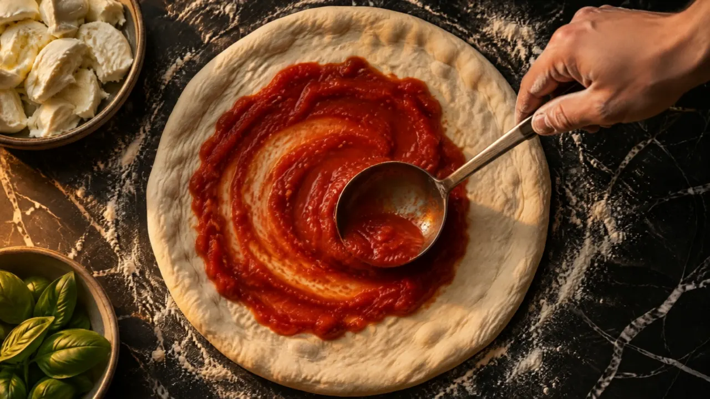
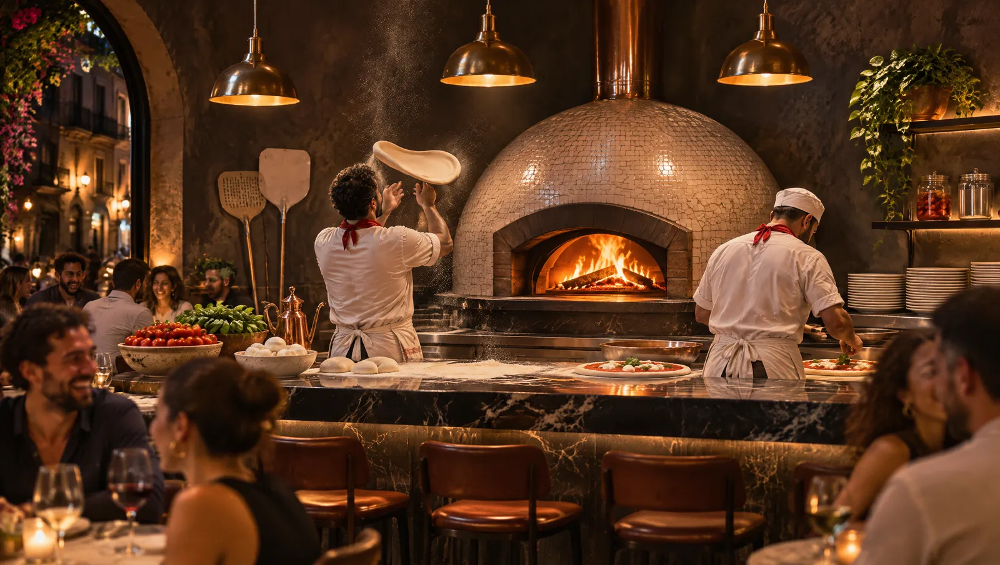

01 Pétrir
Trois jours
de patience
Farine 00, eau, sel, une pincée de levure. Puis soixante-douze heures au frais : c'est le repos qui fait le bord soufflé.
Une pâte, un feu, quatre-vingt-dix secondes. Regarde-la se faire, puis compose la tienne.
01 Pétrir
Farine 00, eau, sel, une pincée de levure. Puis soixante-douze heures au frais : c'est le repos qui fait le bord soufflé.
02 Étirer
La pâte s'ouvre à la main, du centre vers le bord, pour pousser l'air là où il doit gonfler.
03 Garnir
San Marzano écrasée à la main, bufflonne livrée deux fois par semaine, basilic. Rien pour se cacher.
04 Cuire
Chêne et hêtre, une flamme vive. Un quart de tour à mi-cuisson, et c'est prêt.

05 Composer
On part d'une margherita. Ajoute ce que tu veux : tout tombe sur la pizza, et le prix suit.
Margherita, telle quelle
13,00 €
07 Venir
Le comptoir fait face au feu : tu vois ta pizza de la première pincée de farine à la pelle. Nous gardons toujours quelques places pour celles et ceux qui passent.

08 Réserver
Réponse immédiate jusqu'à six couverts. Au-delà, écris à Gino, notre assistant : il s'occupe des grandes tablées.